遊びで植物を育てよう
2025/04/20
深植え過密フリージアが開花しました。
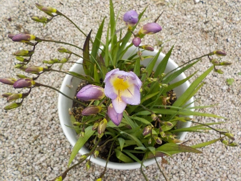
深植えなので花の支えはいらないです。過密なのでこれから咲く花の数が多いです。
過密なので球根が大きくならないかもしれませんが、球根が増えても捨てることになるのでこれでいいんじゃないかな。
【フリージアTOP】
【花TOP】
【園芸TOP】
2024/12/22
フリージアを遅く植えたので、まだ葉っぱが小さいです。
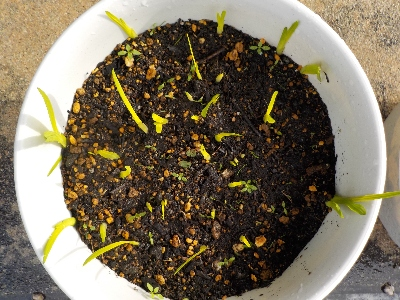
球根を植えてから1月くらいなので、まだ小さいです。
軒下で育てているので、寒くても春までに大きく育つんじゃないかと期待しています。
【フリージアTOP】
【花TOP】
【園芸TOP】
2024/11/17
フリージアの球根をギュウギュウめに植えました。
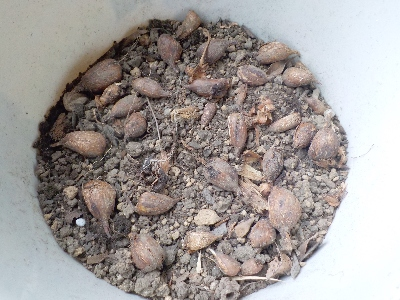
球根が沢山出来ましたが、鉢の数を増やしたくないので密で植えることにしました。
密だと風通りが悪くて病気になったりするのかな？病気にならないで、葉っぱや花が生い茂った状態が見たいです。
【フリージアTOP】
【花TOP】
【園芸TOP】
2024/04/07
フリージアが見頃です。
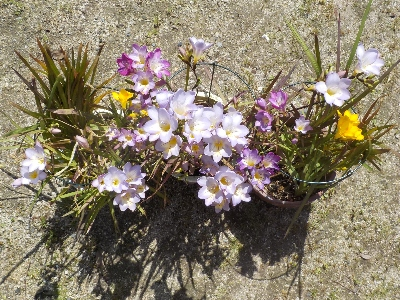
いろんな色がミックスして派手に咲いています。
たぶん土が痩せちゃってると思うので、今年は放ったらかしにしないで球根を掘ろうと思ってます。
【フリージアTOP】
【花TOP】
【園芸TOP】
2023/11/12
去年から植えっぱなしのフリージアです。
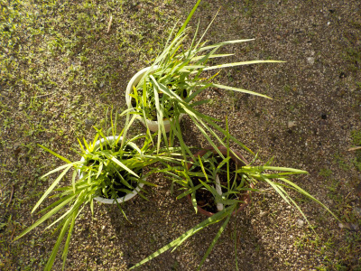
初夏に球根を掘り起こした方が良かったんでしょうけど、フリージアの鉢植えはもうやめようと思い放置していました。
すくすく育っているので、このまま育てようかなと思っています。
【フリージアTOP】
【花TOP】
【園芸TOP】
2023/04/09
12月に植えたフリージアは小さいです。
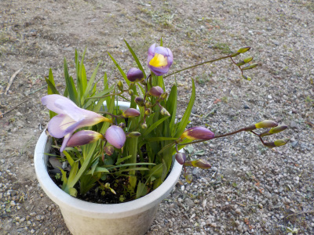
育成期間が短いので小さいです。当然といえば当然。
小さくて可愛いですが、もうちょっと大きくてスラっとした方が見栄えがいいですね。
次はもっと早く植えようと思います。
【フリージアTOP】
【花TOP】
【園芸TOP】
2023/04/01
黄色いフリージアが咲きました。
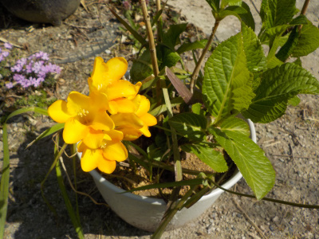
今年も黄色いフリージアから開花がスタートです。
去年より1週間早いです。
【フリージアTOP】
【花TOP】
【園芸TOP】
2022/12/04
フリージアの球根をやっと植付ました。
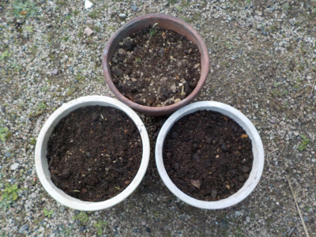
植えようとはずいぶん前から思っていましたが、先延ばししていたら12月になってしまいました。
今回は3鉢です。
たぶん今までで一番遅く植えてます。たぶんちゃんと育つでしょう。
【フリージアTOP】
【花TOP】
【園芸TOP】
2022/07/03
今年のフリージア最終結果です。
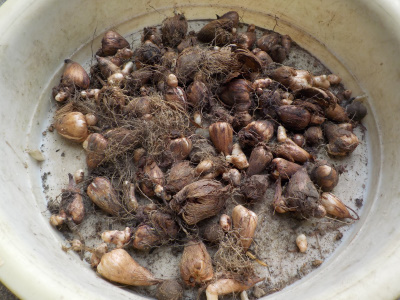
わりと順調に育って花も沢山開花したので、球根もそれなりに増えてると思っていたんですが、増えなかったです。
肥料化足りなかったかな。
でもこれだけあれば十分です。球根増えても困るので、次回も同じ様に育てようと思います。
【フリージアTOP】
【花TOP】
【園芸TOP】
2022/05/05
フリージアの花を取りました。
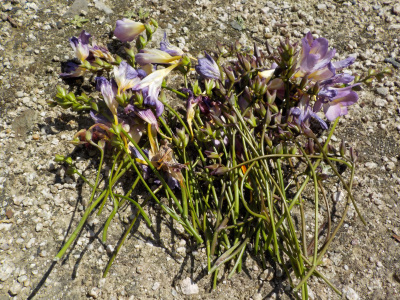
これで球根が大きくなりますね。
でも球根そんなにいらないかな。
【フリージアTOP】
【花TOP】
【園芸TOP】
2022/04/23
フリージアの赤が咲きました。
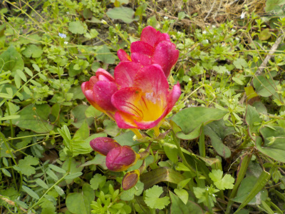
我が家のフリージアは青が一番多く、赤が一番少ないです。
赤を増やしたいですが、赤だけ特別扱いして育てるのは嫌だな。
【フリージアTOP】
【花TOP】
【園芸TOP】
2022/04/16
鉢植えで葉ダレ防止用円形支柱を使用したものです。
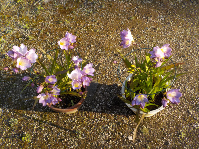
青空の下に置いてて寒かったせいか、そんなに葉っぱも茎も長くないです。
輪がなくてもほとんどが自立出来そうですが、全部が中心に寄っているので見栄えがいいです。
支柱が役に立って良かった。
【フリージアTOP】
【花TOP】
【園芸TOP】
2022/04/10
フリージアの2番目は地植えのブルーです。
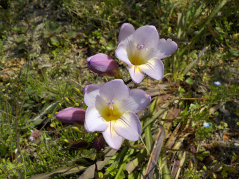
上品な色合いですね。でも今の気分だと黄色の方が好きだ。
温暖化で地植えのフリージアは今後勝手にドンドン増えていくんだろうな。
水仙も増えてるな。こうゆうのってそのうち邪魔になるのかな。
【フリージアTOP】
【花TOP】
【園芸TOP】
2022/04/09
フリージアは地植えの黄色が一番早く咲きました。
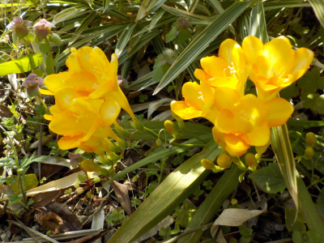
地面は暖かいんですね。鉢植えよりも早く咲きました。
球根を採ったり植えたりとか、水やりして手間暇かけたものより、何もしないて勝手に育ってる地植えの方が成長がいいってなんかつまらないですね。
【フリージアTOP】
【花TOP】
【園芸TOP】
2022/03/21
フリージアのつぼみが出来ていました。

まだツボミは小さいですが、暖かくなってきたのですぐ大きくなるんでしょうね。
今年はよく育っているので、球根が倍増しそうな感じがします。
【フリージアTOP】
【花TOP】
【園芸TOP】
2022/01/31
11月にアジサイの周りに植えたフリージアです。
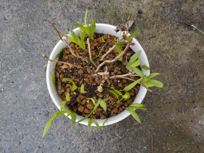
アジサイ鉢の植替えの時に、フリージアを寄せ植えしたものです。
これくらい芽が出てたら、春には賑やかになりそうです。
【フリージアTOP】
【花TOP】
【園芸TOP】
2021/10/31
ダイソーの「鉢植えの葉ダレ防止用円形支柱」はフリージアに丁度いいかも。
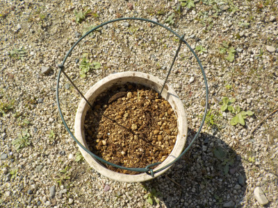
フリージアの球根を植えました。
カーネーション用に買った円形支柱がフリージアに使えるんじゃないかと思い、鉢に装備しました。
たぶんこれで葉っぱが倒れるのを防げそうです。今年はドンドン水やって、大きく育てようと思います。
【フリージアTOP】
【花TOP】
【園芸TOP】
2021/09/26
去年植えたフリージアが発芽
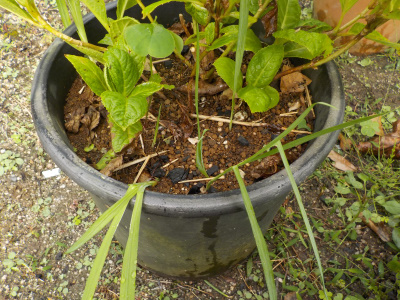
去年アジサイの植替えした時に一緒に植えたフリージアが今頃発芽しました。
自然な状態だと今頃発芽するんですね。
フリージアの球根を植える準備をそろそろした方が良さそうです。
【フリージアTOP】
【花TOP】
【園芸TOP】
2021/06/26
フリージアの球根を掘り起こしました。
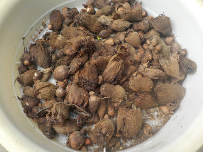
去年と比較したら半分くらいの量かな。
今年はほとんど芽が出なかったので球根がダメになったんじゃないかと心配していたんですが、残っていて良かったです。
次回は適切な時期になったら植えて、大きく育てようと思います。
【フリージアTOP】
【花TOP】
【園芸TOP】
2021/04/10
今年のフリージアは多分失敗。

フリージアを小さく育てようと思い、植えるのを遅くしたり水やりをしなかったです。
希望通り小さな株で花が咲いたんですが、成長した数が少ない。 プランターがスカスカです。
これから芽が出て花が咲けばいいですが、今から芽が出るなんてことはきっとないですよね。
芽が出なかった球根はダメになっているのかな？
【フリージアTOP】
【花TOP】
【園芸TOP】
2020/11/15
放置していたらフリージアの球根から芽が出ていました。
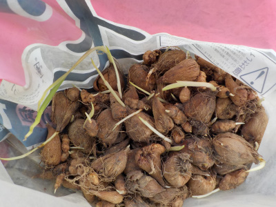
11月半ばなので、もう植え終わっている時期ですが何もしていませんでした。
今日半分くらい植えましたが、芽が出ていると向きとか深さ考えなくていいので楽ですね。
ちょっと深めに植えたので、成長しても倒れにくいかも。
【フリージアTOP】
【花TOP】
【園芸TOP】
大きく育てるよりも、小さく育てた方が可愛くて綺麗だと思う。
【おいしいものを食べよう。】【たくさん寝よう。】
【ソロ活をしよう!】【季節感のあることをしよう。】【動画視聴はほどほどに。】【当サイトの全てのコンテンツは無断転載禁止です。】